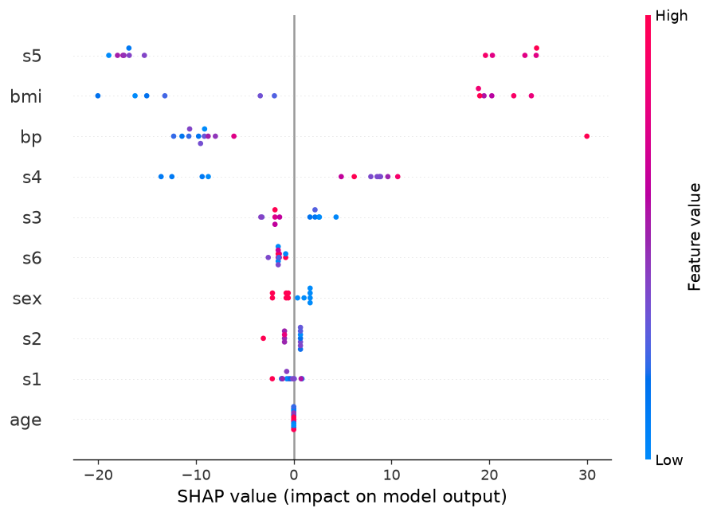
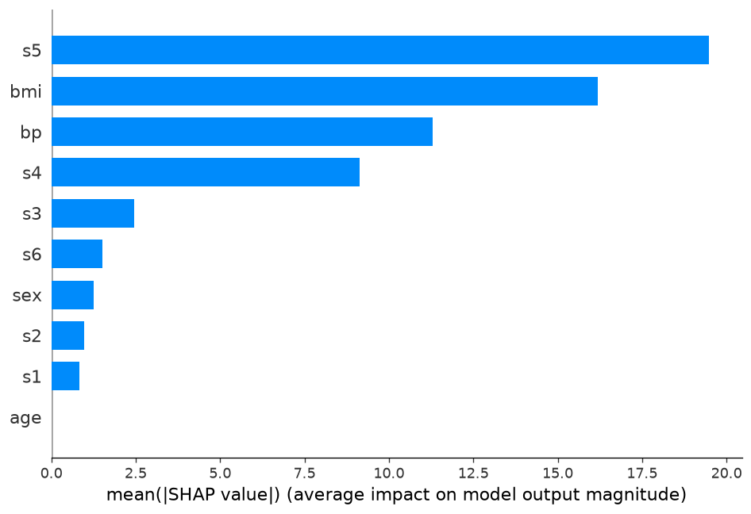
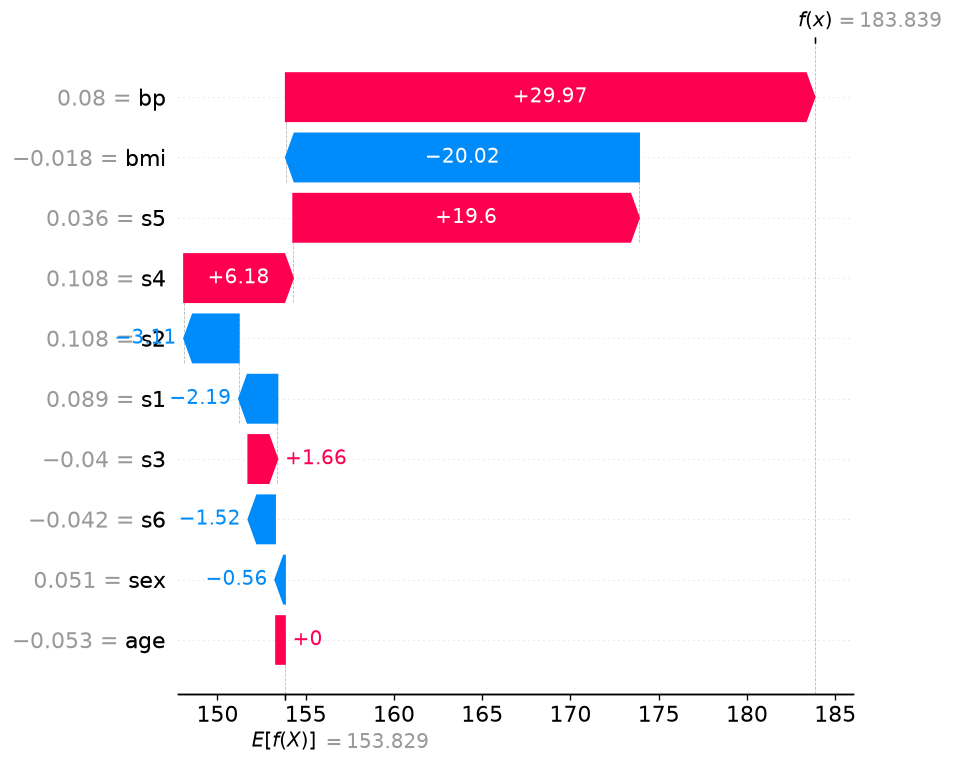

TabularX 实验报告
面向可解释性与可复现性的自动化表格建模
← 点击左右两侧或按键盘方向键翻页 →
TabularX 数据概况报告
① 摘要
输入
输出（结论）
判定为 回归任务（目标为连续值）。
关键发现
- 0 列建议标准化（scale_needed）
- 0 列存在缺失值（has_missing）
- 0 列为常数列、0 列为全空列（预处理器将丢弃）
- 0 列为高基数文本列
- 0 列分布偏斜（skewed，建议 log 变换或缩尾）
- 0 列高基数类别（high_cardinality，建议目标编码）
② 判断流程与证据
2.1 判断流程图
flowchart TD
Start([开始：接收 X, y]) --> InputCheck{输入类型检查}
InputCheck -->|X 不是 DataFrame 或 y 不是 Series| InvalidInput[失败：InvalidDataError]
InputCheck -->|类型正确| ShapeCheck{数据非空检查}
ShapeCheck -->|X 无行/无列，或 y 无样本| EmptyData[失败：EmptyDataError]
ShapeCheck -->|数据非空| AlignCheck{X/y 长度检查}
AlignCheck -->|行数不一致| LengthError[失败：MismatchedLengthError]
AlignCheck -->|长度一致| TaskCheck{任务类型判断}
TaskCheck -->|y 全为空| EmptyTarget[失败：EmptyTargetError]
TaskCheck -->|task_type 非法或无法推断| TaskError[失败：TaskTypeError]
TaskCheck -->|唯一值 = 2| Binary[二分类任务]
TaskCheck -->|唯一值 3~20| Multi[多分类任务]
TaskCheck -->|连续值或浮点且唯一值 > 20| Reg[回归任务]
Binary --> Imbalance{类别不平衡检测}
Multi --> Imbalance
Reg --> ColLoop[逐列分析]
Imbalance -->|最小类别占比 < 10%| Imbalanced[标记 imbalanced]
Imbalance -->|否则| Balanced[类别分布较均衡]
Imbalanced --> ColLoop
Balanced --> ColLoop
ColLoop --> EmptyColCheck{是否全空列？}
EmptyColCheck -->|是：非缺失值 = 0| EmptyColumn[标记 empty_column]
EmptyColCheck -->|否| ConstantCheck{是否常数列？}
ConstantCheck -->|是：唯一值 = 1| ConstantColumn[标记 constant_column]
ConstantCheck -->|否| ColType{列类型判断}
EmptyColumn --> Done([完成：输出 DataProfile])
ConstantColumn --> Done
ColType -->|datetime| DateTime[日期时间列]
ColType -->|boolean| Boolean[布尔列]
ColType -->|整数且唯一值 ≤ 20| Cate[类别列]
ColType -->|整数且唯一值 > 20 或浮点| Num[数值列]
ColType -->|object/str/category| Cat{唯一值与行唯一率}
Cat -->|唯一值 > 200 且 >50% 行唯一| Text[文本列]
Cat -->|其他| Cate
Cate --> HighCard{基数检测}
HighCard -->|unique > 50| HighCardYes[标记 high_cardinality]
HighCard -->|unique ≤ 50| LowCard[基数正常]
HighCardYes --> Miss{缺失值检查}
LowCard --> Miss
Num --> Scale{scale 判据}
Scale -->|‖mean‖>0.5 或 std>1.5| ScaleYes[标记 scale_needed]
Scale -->|否则| ScaleNo[无需标准化]
ScaleYes --> Skew{偏度检测}
ScaleNo --> Skew
Skew -->|‖skew‖ > 1| Skewed[标记 skewed]
Skew -->|否则| NoSkew[分布风险较低]
Skewed --> Miss{缺失值检查}
NoSkew --> Miss
DateTime --> Miss
Boolean --> Miss
Text --> Miss
Miss -->|n_missing > 0| MissYes[标记 has_missing]
Miss -->|无缺失| Done
MissYes --> Done
classDef error fill:#f8d7da,stroke:#721c24,stroke-width:1px;
classDef warning fill:#fff3cd,stroke:#856404,stroke-width:1px;
class InvalidInput,EmptyData,LengthError,EmptyTarget,TaskError error;
class EmptyColumn,ConstantColumn,MissYes,ScaleYes,Skewed,HighCardYes,Imbalanced warning;
↑ profile 阶段完整判断流程。后续阶段：Split → Preprocess → Model Search。
2.2 目标变量判断依据
任务类型：regression
- task_type_source =
user
— 用户手动指定为回归任务
规则：唯一值 ≤2 → 二分类；3~20 → 多分类；浮点连续且唯一值 >20 → 回归
2.3 特征列判断依据（仅列特殊情况）
age
numeric
- col_type =
numeric
— 列类型判定为 numeric
- scale_rule =
|mean|>0.5 or std>1.5
— |mean|=0.0000, std=0.0476，不满足判据 → 无需 scale
sex
numeric
- col_type =
numeric
— 列类型判定为 numeric
- scale_rule =
|mean|>0.5 or std>1.5
— |mean|=0.0000, std=0.0476，不满足判据 → 无需 scale
bmi
numeric
- col_type =
numeric
— 列类型判定为 numeric
- scale_rule =
|mean|>0.5 or std>1.5
— |mean|=0.0000, std=0.0476，不满足判据 → 无需 scale
bp
numeric
- col_type =
numeric
— 列类型判定为 numeric
- scale_rule =
|mean|>0.5 or std>1.5
— |mean|=0.0000, std=0.0476，不满足判据 → 无需 scale
s1
numeric
- col_type =
numeric
— 列类型判定为 numeric
- scale_rule =
|mean|>0.5 or std>1.5
— |mean|=0.0000, std=0.0476，不满足判据 → 无需 scale
s2
numeric
- col_type =
numeric
— 列类型判定为 numeric
- scale_rule =
|mean|>0.5 or std>1.5
— |mean|=0.0000, std=0.0476，不满足判据 → 无需 scale
s3
numeric
- col_type =
numeric
— 列类型判定为 numeric
- scale_rule =
|mean|>0.5 or std>1.5
— |mean|=0.0000, std=0.0476，不满足判据 → 无需 scale
s4
numeric
- col_type =
numeric
— 列类型判定为 numeric
- scale_rule =
|mean|>0.5 or std>1.5
— |mean|=0.0000, std=0.0476，不满足判据 → 无需 scale
s5
numeric
- col_type =
numeric
— 列类型判定为 numeric
- scale_rule =
|mean|>0.5 or std>1.5
— |mean|=0.0000, std=0.0476，不满足判据 → 无需 scale
s6
numeric
- col_type =
numeric
— 列类型判定为 numeric
- scale_rule =
|mean|>0.5 or std>1.5
— |mean|=0.0000, std=0.0476，不满足判据 → 无需 scale
③ 详细描述性统计
目标变量
| 任务类型 | regression |
|---|
| 均值 | 152.1335 |
|---|
| 标准差 | 77.0057 |
|---|
| 缺失率 | 0.00% |
|---|
特征列
| 列名 | 类型 | dtype | 缺失数 | 缺失率 |
唯一值 | 标签 | 均值 | 标准差 |
| age |
numeric |
float64 |
0 |
0.00% |
58 |
numeric
|
-0.0000 |
0.0476 |
| sex |
numeric |
float64 |
0 |
0.00% |
2 |
numeric
|
0.0000 |
0.0476 |
| bmi |
numeric |
float64 |
0 |
0.00% |
163 |
numeric
|
-0.0000 |
0.0476 |
| bp |
numeric |
float64 |
0 |
0.00% |
100 |
numeric
|
-0.0000 |
0.0476 |
| s1 |
numeric |
float64 |
0 |
0.00% |
141 |
numeric
|
-0.0000 |
0.0476 |
| s2 |
numeric |
float64 |
0 |
0.00% |
302 |
numeric
|
0.0000 |
0.0476 |
| s3 |
numeric |
float64 |
0 |
0.00% |
63 |
numeric
|
-0.0000 |
0.0476 |
| s4 |
numeric |
float64 |
0 |
0.00% |
66 |
numeric
|
-0.0000 |
0.0476 |
| s5 |
numeric |
float64 |
0 |
0.00% |
184 |
numeric
|
0.0000 |
0.0476 |
| s6 |
numeric |
float64 |
0 |
0.00% |
56 |
numeric
|
0.0000 |
0.0476 |
TabularX 数据划分报告
① 摘要
输入
输出
关键结论
任务为 回归任务，使用了 纯随机采样（random split）。
随机种子：42。
② 判断流程与证据
2.1 判断流程图
flowchart TD
Start([开始：接收 X, y, profile, config]) --> TaskCheck{任务类型判断}
TaskCheck -->|binary / multiclass| Stratify[使用分层采样 stratify=y]
TaskCheck -->|regression| Random[使用纯随机采样]
Stratify --> Phase1[阶段 1：分出测试集]
Random --> Phase1
Phase1 -->|stratify 失败（类别样本不足）| StratifyFail1[失败：StratifyError]
Phase1 -->|成功| Phase2[阶段 2：从剩余部分分验证集]
Phase2 -->|stratify 失败| StratifyFail2[失败：StratifyError]
Phase2 -->|成功| SizeCheck{子集样本数检查}
SizeCheck -->|任一子集 < min_samples_split| SizeFail[失败：InvalidSplitError]
SizeCheck -->|全部达标| DistCheck{类别分布对比}
DistCheck -->|max_shift < 0.05| Good[分布一致 ✅]
DistCheck -->|max_shift ≥ 0.05| Warn[分布差异较大 ⚠️ 记录警告]
Good --> Done([完成：输出 SplitResult])
Warn --> Done
classDef error fill:#f8d7da,stroke:#721c24,stroke-width:1px;
classDef warning fill:#fff3cd,stroke:#856404,stroke-width:1px;
class StratifyFail1,StratifyFail2,SizeFail error;
class Warn warning;
↑ split 阶段完整判断流程。
2.2 判断依据
stratify_reason = regression
— 目标任务类型为回归，使用纯随机采样。
random_seed = 42
— 随机种子 = 42，保证划分可复现。
train_ratio = 0.5973
— 训练集 264 样本，占 59.73%
valid_ratio = 0.2014
— 验证集 89 样本，占 20.14%
test_ratio = 0.2014
— 测试集 89 样本，占 20.14%
TabularX 数据预处理报告
① 摘要
输入 / 输出
关键结论
没有列被丢弃。
特征数量保持 10 列不变。
② 判断流程
flowchart TD
Start([开始：接收 X, y, profile, split_result, config]) --> Slice[阶段 1：切片数据]
Slice -->|提取 train/valid/test 索引| ColLoop[阶段 2：逐列处理]
ColLoop --> EmptyCol{常数列或全空列？}
EmptyCol -->|是| Drop[丢弃此列]
EmptyCol -->|否| TextCol{文本列？}
TextCol -->|是，handle_text=drop| Drop
TextCol -->|是，handle_text=keep| TextError[报错：暂不支持 NLP]
TextCol -->|否| DtCol{日期列？}
DtCol -->|handle_datetime=drop| Drop
DtCol -->|handle_datetime=keep| Keep[原样保留]
DtCol -->|handle_datetime=extract| DtExtract[提取年/月/日数值特征]
Drop --> NextCol
TextError --> NextCol
Keep --> NextCol
DtExtract --> NextCol
DtCol -->|否| NumCol{数值列？}
NumCol -->|是| NumImpute[填补缺失值]
NumImpute --> ScaleQuery{需要标准化？}
ScaleQuery -->|是| SkewQuery1{分布偏斜？}
ScaleQuery -->|否| SkewQuery2{分布偏斜？}
SkewQuery1 -->|是| YeoJohnson[Yeo-Johnson 变换
兼作标准化]
SkewQuery1 -->|否| Scale[标准化]
SkewQuery2 -->|是| YeoJohnson2[Yeo-Johnson 变换]
SkewQuery2 -->|否| NoOp[无需处理]
YeoJohnson --> NextCol
Scale --> NextCol
YeoJohnson2 --> NextCol
NoOp --> NextCol
NumCol -->|否| BoolCol{布尔列？}
BoolCol -->|是| BoolProc["填补缺失 转 int(0/1)"]
BoolProc --> NextCol
BoolCol -->|否| CateCol{类别列？}
CateCol -->|是| CateImpute[填补缺失值]
CateImpute --> HighCard{高基数？}
HighCard -->|unique > max_onehot_categories| HighEnc{高基数编码}
HighEnc -->|target| TargetEncode[目标编码]
HighEnc -->|frequency| FreqEncode[频率编码]
HighCard -->|否| LowEnc{低基数编码}
LowEnc -->|onehot| OneHot[OneHot 编码]
LowEnc -->|label| LabelEncode[标签编码]
TargetEncode --> NextCol
FreqEncode --> NextCol
OneHot --> NextCol
LabelEncode --> NextCol
CateCol -->|否| Unknown[未知类型 原样保留]
Unknown --> NextCol
NextCol{还有下一列？}
NextCol -->|是| ColLoop
NextCol -->|否| Done([完成：输出 PreprocessedData])
classDef error fill:#f8d7da,stroke:#721c24,stroke-width:1px;
classDef decision fill:#fff3cd,stroke:#856404,stroke-width:1px;
class Drop,TextError error;
class EmptyCol,TextCol,DtCol,NumCol,BoolCol,CateCol,ScaleQuery,SkewQuery1,SkewQuery2,HighCard,HighEnc,LowEnc decision;
↑ preprocess 阶段决策流程。灰色背景节点为决策分支，红色为错误出口。
③ 逐列变换记录
总计 10 列 ·
标准化 0 列 · 填补 0 列 · 编码 0 列 · 丢弃 0 列
| 列名 |
原始 dtype |
原始唯一值 |
变换动作 |
输出特征数 |
说明 |
| age |
float64 |
58 |
保留
|
1 |
|
| sex |
float64 |
2 |
保留
|
1 |
|
| bmi |
float64 |
163 |
保留
|
1 |
|
| bp |
float64 |
100 |
保留
|
1 |
|
| s1 |
float64 |
141 |
保留
|
1 |
|
| s2 |
float64 |
302 |
保留
|
1 |
|
| s3 |
float64 |
63 |
保留
|
1 |
|
| s4 |
float64 |
66 |
保留
|
1 |
|
| s5 |
float64 |
184 |
保留
|
1 |
|
| s6 |
float64 |
56 |
保留
|
1 |
|
④ 数据概况
输出特征名
age
sex
bmi
bp
s1
s2
s3
s4
s5
s6
训练集描述性统计
| 列名 |
均值 |
标准差 |
最小值 |
最大值 |
| age |
0.0012 |
0.0464 |
-0.1072 |
0.1107 |
| sex |
0.0019 |
0.0477 |
-0.0446 |
0.0507 |
| bmi |
0.0012 |
0.0472 |
-0.0806 |
0.1609 |
| bp |
-0.0012 |
0.0483 |
-0.1124 |
0.1079 |
| s1 |
-0.0023 |
0.0486 |
-0.1089 |
0.1539 |
| s2 |
-0.0013 |
0.0490 |
-0.1156 |
0.1988 |
| s3 |
-0.0035 |
0.0453 |
-0.1023 |
0.1775 |
| s4 |
0.0007 |
0.0470 |
-0.0764 |
0.1852 |
| s5 |
0.0011 |
0.0458 |
-0.0964 |
0.1336 |
| s6 |
0.0045 |
0.0473 |
-0.1378 |
0.1356 |
选模依据为验证集指标。仅锁定的单模型提供最终测试分数；其余候选及 Voting 未进行测试评估，缺省值不代表零分。
TabularX 模型搜索报告
① 摘要
输入
配置
| 任务类型 | regression |
|---|
| 主指标 | rmse |
|---|
| 优化方向 | minimize |
|---|
Voting 组合模型
包含模型：Voting 组合：random_forest, xgboost
验证集 rmse = 61.8417
查看详细报告
② 整体流程图
flowchart TB
Input([配置 + 预处理后数据]) --> Parse[解析配置
确定模型列表]
subgraph Tuning[并行调参]
M1["模型 1
Optuna x n_trials"]
M2["模型 2
Optuna x n_trials"]
M3["..."]
end
Parse --> Tuning
M1 & M2 & M3 --> Retrain["训练集拟合
验证集评估"]
Retrain --> Rank[按验证集主指标排序]
Rank --> Best[最优单模型]
Rank --> Vote["构建 Voting 组合
(Top-K)"]
Vote --> VoteEval[评估 Voting
仅验证集]
Best --> Lock[锁定单模型及参数]
Lock --> Final[训练与验证集合并拟合
仅锁定模型执行最终测试]
Final --> Output[输出 ModelSearchResult]
VoteEval --> Output
Output --> Report[生成 HTML 报告]
模型搜索阶段完整流程。核心：并行调参 → 最佳参数重训 → 排序选出最优 → Voting 组合。
③ 最优模型：random_forest
random_forest
验证集 rmse = 55.8672
测试集 rmse = 54.6868
查看详细报告
3.1 三集表现
| 数据集 |
rmse |
mae |
r2 |
| 训练集 |
54.1187
|
45.2917
|
0.5289
|
| 验证集 |
55.8672 |
47.6756 |
0.4303 |
| 测试集 |
54.6868
|
45.3454
|
0.4355
|
3.2 最佳参数
ccp_alpha
0.007799726016810133
④ 模型排名
4.1 主指标对比（rmse）
4.2 详细排名表
| 排名 |
模型 |
状态 |
rmse（训练集） |
rmse（验证集） |
rmse（测试集） |
调参耗时 |
操作 |
| 1 |
random_forest
最优
|
success |
54.1187 |
55.8672 |
54.6868
|
0.0s |
详情 |
| 2 |
xgboost
|
success |
76.2090 |
73.3247 |
—
|
0.0s |
详情 |
| — |
Voting 组合 |
success |
— |
61.8417 |
—
|
— |
详情 |
⑥ 可解释性与公平性
SHAP 可解释性分析 — 对最优模型
random_forest 的决策逻辑进行了可视化解构。
已生成特征重要性排序、SHAP Summary 图和单样本解释。
查看完整可解释性报告 →
← 返回总览
Voting 组合模型报告
① 基本信息
成员模型
random_forest
xgboost
Voting 验证分数未超过最佳单模型
Voting rmse = 61.8417
vs 最佳单模型 rmse = 55.8672
— 仅为验证集比较，未执行集成模型的测试评估。
② 主指标对比（rmse）
label: function(ctx) {
return ctx.parsed.y.toFixed(4);
}
}
}
},
scales: {
y: {
title: { display: true, text: 'rmse' }
},
x: {
grid: { display: false }
}
}
}
});
})();
③ 三集表现
| 数据集 |
rmse |
mae |
r2 |
| 验证集 |
61.8417 |
54.1821 |
0.3020 |
⑤ 结论
Voting 组合 2 个模型（random_forest, xgboost），
策略为 soft voting（概率平均）。
推荐采用 最佳单模型作为最终方案。
← 返回模型搜索总览
TabularX 可解释性与公平性报告
① 摘要
输入
结论
对最优模型 random_forest 执行了 SHAP 可解释性分析。
未指定敏感特征，跳过公平性评估。
② 整体流程图
flowchart TB
Input([模型搜索结果]) --> SHAPBlock[SHAP 可解释性
对最优模型]
SHAPBlock --> Importance[特征重要性排序
Top-10]
SHAPBlock --> Viz[SHAP 可视化
beeswarm / 柱状图 / waterfall]
SHAPBlock --> Direction[特征贡献方向分析]
Input --> FairnessBlock[公平性评估
对每个敏感特征]
FairnessBlock --> Resolve[查找 column_mappings
解析预处理后列名]
Resolve --> Dropped{已被丢弃？}
Dropped -->|是| Skip[跳过并提示]
Dropped -->|否| Split[按子组拆分测试集]
Split --> GroupMetrics[计算各子组指标
正类预测率 / 准确率 / TPR / FPR]
GroupMetrics --> Diff[计算公平性差异
Demographic Parity
Equalized Odds TPR/FPR]
Diff --> Threshold{超出配置阈值？}
Threshold -->|是| Warn[标记潜在偏见]
Threshold -->|否| Pass[已计算指标未超阈值]
Diff -->|指标未定义| Unknown[无法判断并说明原因]
SHAPBlock & FairnessBlock --> Report[生成可解释性与公平性报告]
可解释性与公平性报告完整流程。SHAP 解释在最优模型上自动执行；公平性评估在用户指定敏感特征后执行。
③ SHAP 可解释性分析
1.1 基本信息
模型决策依据
最优模型 random_forest 在 12 个测试样本上进行了 SHAP 解释。
前 10 个特征累计解释了约 100.0% 的模型决策，
说明模型决策主要受少数关键特征驱动。
1.2 特征重要性（Top-10）
| 排名 |
特征 |
平均 |SHAP| |
解释力占比 |
均值 |
标准差 |
最小值 |
最大值 |
| 1 |
s5 |
19.4859 |
30.9% |
-0.6253 |
19.7258 |
-18.9062 |
24.8302 |
| 2 |
bmi |
16.1869 |
25.6% |
4.5461 |
16.9171 |
-20.0229 |
24.2949 |
| 3 |
bp |
11.2846 |
17.9% |
-6.2894 |
11.0418 |
-12.2753 |
29.9713 |
| 4 |
s4 |
9.1208 |
14.5% |
1.7685 |
9.2339 |
-13.5602 |
10.6310 |
| 5 |
s3 |
2.4448 |
3.9% |
0.1450 |
2.5684 |
-3.3654 |
4.3295 |
| 6 |
s6 |
1.5204 |
2.4% |
-1.5204 |
0.4259 |
-2.6035 |
-0.8228 |
| 7 |
sex |
1.2647 |
2.0% |
0.0932 |
1.4055 |
-2.1782 |
1.6750 |
| 8 |
s2 |
0.9744 |
1.5% |
-0.1714 |
1.1608 |
-3.1078 |
0.6883 |
| 9 |
s1 |
0.8243 |
1.3% |
-0.5490 |
0.8307 |
-2.1909 |
0.8417 |
| 10 |
age |
0.0000 |
0.0% |
0.0000 |
0.0000 |
0.0000 |
0.0000 |
1.3 SHAP 可视化

SHAP Summary（beeswarm）— 每个点代表一个样本的 SHAP 值

特征重要性排序（平均 |SHAP| 值）

单个样本的 SHAP Waterfall 解释
1.4 特征贡献方向摘要
下表列出 Top-5 特征对预测的总体影响方向。均值 > 0 表示该特征值越高越推动预测向正类（或更高预测值），
均值 < 0 表示该特征值越高越推动预测向负类（或更低预测值）。
| 特征 |
平均 SHAP 值 |
主导方向 |
影响描述 |
| s5 |
-0.6253 |
负向 |
值越大 → 预测值越低 |
| bmi |
4.5461 |
正向 |
值越大 → 预测值越高 |
| bp |
-6.2894 |
负向 |
值越大 → 预测值越低 |
| s4 |
1.7685 |
正向 |
值越大 → 预测值越高 |
| s3 |
0.1450 |
正向 |
值越大 → 预测值越高 |
④ 公平性评估
未指定敏感特征
未指定敏感特征，跳过公平性评估。可通过
FairnessConfig(sensitive_features=["列名1", "列名2"])
启用公平性审计，自动计算模型在不同子组间的性能差异和公平性指标
（Demographic Parity、Equalized Odds）。
报告结束
本报告由 TabularX 自动生成。
所有模型训练、评估、可解释性分析及公平性审计均在本地执行。
如需复现，请保存完整的实验输出目录。